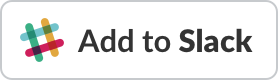
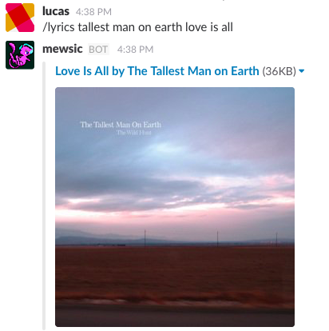
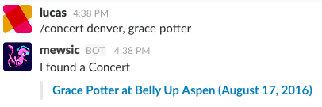

Mewsic
The *Mew* Musical Slackbot
Mewsic is a Slack bot that can tell you about artists and albums,
grab song lyrics and find local concert dates in your city.
It's all done within Slack through slash commands.

After installing, you'll have these commands available:
/artist *ARTIST NAME*
/album *ALBUM NAME*
/lyrics *ARTIST / SONG*
/concert *CITY, ARTIST* (requires both a comma and space)
Read on to see all the features. This videos shows the whole installation and use of Mewsic, too.
/Artist Slash Command
When you discover an amazing new artist, it's now easy to tell everyone. After installing the Mewsic Bot simply type:
/artist *ARTIST NAME*
Mew will use its mystical powers to send you the band biography and embed their top Spotify tracks right into the channel. Everyone will finally realize that you have an awesome taste in music. The response looks like this:

Convinced yet?

/Lyrics Command
The music is moving you to tears and you must learn every single word! I know those feels. Simply say:
/lyrics *ARTIST SONG*
Now you'll be sent the Genius.com link to that song, so you can dig into the deeper meanings.

You can install this beauty in a few clicks:
/Concerts Command
Music is best when it's live. You can request information on any band coming to your city with the /concerts command.
/concerts *YOUR CITY, ARTIST*
(notice the comma ^ between city and artist).
This sends back the upcoming concert dates for that group in your city. Mad props to Songkick for their amazing API.

Grab it for your team!

But how does it work?!
I know, it's pretty rad. I built this website with Node and Express, Photoshop my own HTML/CSS.
The actual bot endpoints are an AWS Lambda, built with Serverless.
It utilizes the Spotify, Last.fm, Genius and SongKick APIs, putting them all in one place.
I built this bot for my brothers and myself, but thought I should share it with the world.
You can read more about the projects I build here.
<3 Lucas
email: hey (at) thelucasmoore.com
(by the way, did you find the Missingo?)